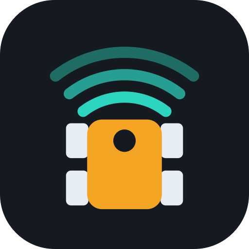

CSE442 · الروبوتات · مشروع الفريق

روبوت استكشاف ذاتي متعدد البيئات
روبوت واحد يستكشف كهفًا وسطح المريخ وقاع البحر بنفسه — محاكاة من المحرك حتى الخريطة.
| # | الاسم |
|---|---|
| 1 | أحمد حامد محمد |
| 2 | أمل هشام حسني |
| 3 | تسنيم أمين جميل |
| 4 | خلود وليد عطية |
| 5 | دنيا عصام فتحي |
| 6 | مازن محمد حسين |
| 7 | محمد أسامة صلاح |
| 8 | محمد السيد محمد |
| 9 | محمود أحمد عبد الغني |